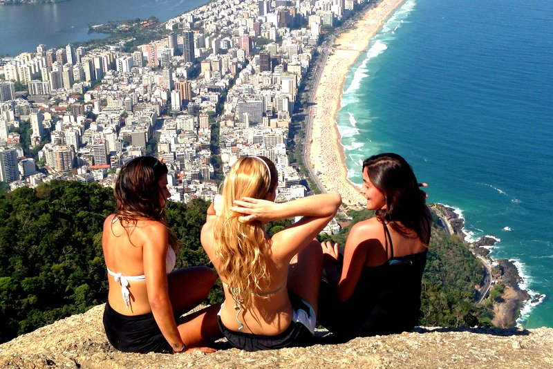

Trilha do Morro Dois Irmãos
A trilha do Morro Dois Irmãos possui cerca de 1,5 km de extensão em cada trecho, totalizando aproximadamente 3 km ida e volta. Ela inicia na comunidade do Vidigal e leva os visitantes por uma subida íngreme, porém acessível, através de uma trilha bem demarcada. Ao alcançar o topo do Morro Dois Irmãos, a recompensa é uma vista deslumbrante que abrange a Praia do Leblon, Ipanema, o Cristo Redentor e o Oceano Atlântico. É uma experiência recomendada tanto para os amantes da natureza quanto para aqueles que desejam desfrutar de um dos panoramas mais icônicos do Rio de Janeiro.
Trilha Pedra da Gávea
A Trilha da Pedra da Gávea é uma das mais desafiadoras e recompensadoras do Rio de Janeiro, oferecendo uma experiência única para os amantes da natureza e aventureiros. Com aproximadamente 3,5 km de extensão (ida), a trilha inicia na entrada do Parque Nacional da Tijuca e leva os visitantes por uma jornada através da exuberante Mata Atlântica. O percurso inclui trechos íngremes e algumas escaladas, mas a recompensa no topo é incomparável: uma vista panorâmica espetacular da cidade, das praias e do Oceano Atlântico. É uma trilha ideal para quem busca um desafio físico e visualizações inesquecíveis da Cidade Maravilhosa.
Trilha Garganta do Céu

A trilha para a garganta é a mesma trilha que usamos para subir a Pedra da Gávea “Via P4”, mas sem os lances técnicos. Embora não seja necessário o uso de equipamentos de escalada, não é uma trilha fácil, e sim moderada e não é bem demarcada. Mesmo assim é uma ótima oportunidade para conhecer um pouco da trilha da Pedra da Gávea e testar o condicionamento físico. A trilha é considerada de nível moderado, pois é uma trilha íngreme e possui alguns lances de Trepa-Pedra, onde é necessário utilizar as mãos para subir em pedras e raízes.
Trilha Pedra Bonita
A Trilha da Pedra Bonita é uma das mais acessíveis e populares trilhas para caminhada no Rio de Janeiro, especialmente conhecida por suas vistas deslumbrantes e facilidade de acesso. Localizada na Floresta da Tijuca, próxima aos bairros São Conrado e Barra da Tijuca, a trilha tem aproximadamente 1,2 km de extensão (ida), com um percurso relativamente fácil e bem marcado. Além de ser uma excelente opção para iniciantes e famílias, a Trilha da Pedra Bonita também é conhecida como ponto de partida para voos de asa delta e parapente, proporcionando uma perspectiva única e emocionante da cidade do Rio de Janeiro.
Trilha Bico do Papagaio
A trilha para o Bico do Papagaio tem aproximadamente 3 km de extensão (ida), começando na estrada do Redentor, próximo à entrada do Parque Nacional da Tijuca. Durante o percurso, os visitantes enfrentam subidas íngremes e terrenos rochosos, passando por trechos de mata fechada típica da Mata Atlântica. Ao atingir o topo do Bico do Papagaio, que está a uma altitude de cerca de 989 metros, os aventureiros são recompensados com uma vista deslumbrante da cidade do Rio de Janeiro, da Baía de Guanabara e das montanhas ao redor. A formação rochosa em si se destaca pela sua forma característica que lembra um bico de papagaio, daí o nome..
Trilha Pico da Tijuca
O Pico da Tijuca é o ponto mais alto do Parque Nacional da Tijuca e também da cidade do Rio de Janeiro, atingindo cerca de 1.021 metros de altitude. Esta trilha é uma das mais populares e acessíveis para quem deseja explorar as belezas naturais da região e apreciar vistas panorâmicas espetaculares. A trilha tem aproximadamente 2,5 km de extensão (ida), partindo da entrada do parque próximo ao bairro do Alto da Boa Vista. O percurso é marcado por uma caminhada em meio à Mata Atlântica, proporcionando uma experiência imersiva na vegetação exuberante e na fauna local.
Trilha Pedra do Elefante

A trilha da Pedra do Elefante, localizada no Rio de Janeiro, oferece uma experiência de trekking bastante acessível aos amantes da natureza. Com aproximadamente 4 km de extensão (ida e volta), proporciona uma caminhada leve a moderada, ideal para iniciantes e famílias. O trajeto revela vistas panorâmicas incríveis da Baía de Guanabara e do entorno verdejante da região, tornando-a uma opção popular para quem busca um contato rápido e revigorante com a natureza dentro da cidade.
Trilha Pedra do Gavião
A Pedra do Gavião é uma formação rochosa localizada na cidade de Teresópolis, no estado do Rio de Janeiro. A trilha até a Pedra do Gavião é conhecida por sua beleza cênica e desafios moderados. Com cerca de 5 km de extensão (ida e volta), a trilha leva os visitantes por uma caminhada que mescla trechos íngremes com paisagens deslumbrantes da Mata Atlântica e vistas panorâmicas da região serrana. No topo da Pedra do Gavião, os aventureiros são recompensados com uma visão espetacular das montanhas e do vale ao redor, proporcionando uma experiência memorável para quem busca contato direto com a natureza.